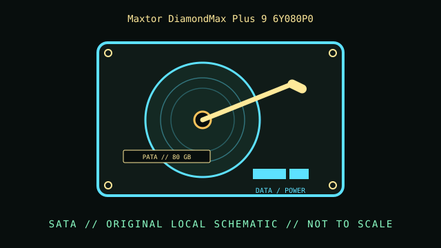

[ INDIVIDUAL COMPONENT // HARD DISK DRIVES ]
Maxtor DiamondMax Plus 9 6Y080P0
DiamondMax Plus 9, 80 GB PATA model. This record describes this exact catalog identity; related capacities, interface variants, suffixes, and revisions may have different properties.

IDENTIFICATION: Compare the complete model and suffix on the label with the manufacturer document and actual drive inquiry. Family-level values do not describe every revision or the condition of a particular unit.
Part specifications
| Catalog subcategory | PATA / IDE desktop drives |
|---|---|
| Catalog identity | Maxtor DiamondMax Plus 9 6Y080P0 |
| Product family | DiamondMax Plus 9, 80 GB PATA model |
| Form factor | 3.5-inch desktop; exact external dimensions are not inferred from this class. |
| Interface | Parallel ATA, Ultra DMA/133 (ATA/133). |
| Capacity / performance / sectors | 80 GB model; 7200 RPM; P in this model number denotes the 8 MB buffer version in the series guide. This entry is for 6Y080P0 specifically, not every DiamondMax Plus 9 SKU. |
| Compatibility | Requires a PATA controller and correct UDMA-capable 80-conductor cable for highest transfer mode; check host BIOS capacity and jumper setup. |
Handling, service & preservation
- Follow the model-family configuration guide and observe ESD precautions when handling the exposed PCB. For preservation, keep the original jumper position and label photographs with the drive.
- Before service, photograph the label, connectors, board markings, firmware/model identity, and installed carrier; note condition and any prior repair.
- Never open a hard disk outside a qualified clean environment. Mechanical shocks, contamination, and uncontrolled power cycling can worsen failure.
- For preservation, make independent verified copies and record checksums and read errors; SMART or self-test results are useful evidence but do not guarantee future reliability.
Model-specific source
- Seagate/Maxtor DiamondMax Plus 9 Ultra DMA 133 QuickSpecs (PDF)Maxtor/Seagate series document identifies DiamondMax Plus 9 PATA models and buffer-code convention; match complete 6Y080P0 label.
Values above are limited to the cited exact-model or clearly identified model-family document. Record the document revision with any collection measurements.